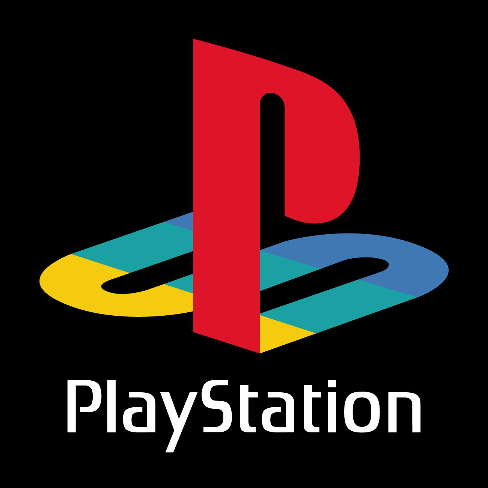
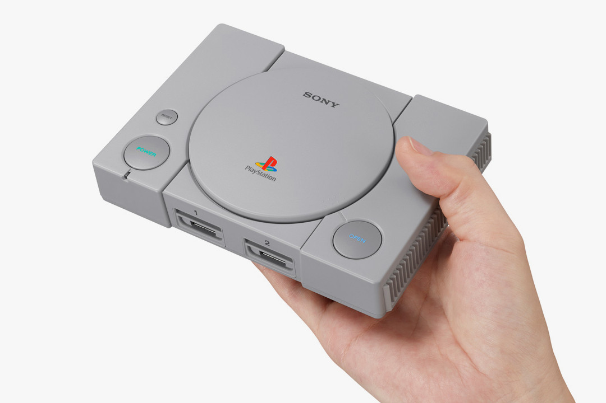

Historia PlayStation
32-bitowa konsola do gier wideo, wyprodukowana w Japonii przez firmę Sony Computer Entertainment, zaprojektowana przez Kena Kutaragiego.Premiera konsoli odbyła się 3 grudnia 1994 roku[1], kiedy to pierwsze egzemplarze trafiły na półki japońskich sklepów. Niecały rok później, 9 września 1995 roku, konsola ukazała się w Stanach Zjednoczonych[3], a 29 września tego samego roku w Europie[2]


PlayStation miała zostać stworzona we współpracy z Nintendo, jako SNES-CD – Sony miało dostarczyć czytnik CD-ROM oraz ogólnie pomóc przy architekturze systemu. Jednak z powodu różnicy zdań, Nintendo rozpoczęło współpracę z Phillips, a w 1993 roku Sony samo zaczęło prace nad swoją konsolą[9], dodając literę X do jej nazwy – po premierze systemu litera została usunięta, jednak skrót pozostał – PSX. Sprzedaż konsoli osiągnęła 100 milionów sztuk, natomiast ówczesny potentat na rynku konsol - SEGA oferujący konsolę SEGA Saturn sprzedał niespełna 10 milionów sztuk[10], a Nintendo 33 mln[11].
Początkowo do konsoli został dodawany pad bez analogów, który został dodany w kolejnej rewizji. Ostatecznie została wydana trzecia edycja pada ze zmienionym kształtem grzybka.
3 grudnia 2018 została wydana zminiaturyzowana wersja konsoli – PlayStation Classic[12].